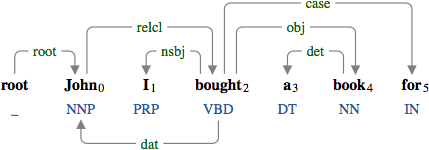

relcl : relative clause
A relative clause (relcl) modifies the head of a noun phrase.
The relationship between the relativizer and its referent (r-*) is represented by the secondary dependency.
The relative clause "who is smart" modifying "John".
The relative clause "who I wanted to meet" modifying "John".
The relative clause "for whom I wanted to meet" modifying "John".
The relative clause "for whom I bought a book" modifying "John".

The relative clause "where I met John" modifying "the bookstore".
The relative clause may be governed by the zero relativizer. When the zero relativizer is used, the referent of the relativizer is directly connected to the predicate by the secondary dependency.

The relative clause "I met" containing the zero relativizer.

The relative clause "I bought a car for" containing the zero relativizer.
The relative clause "I bought a car for" containing the zero relativizer.